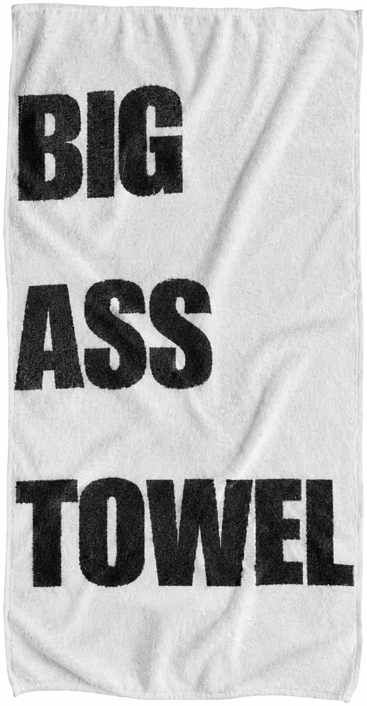
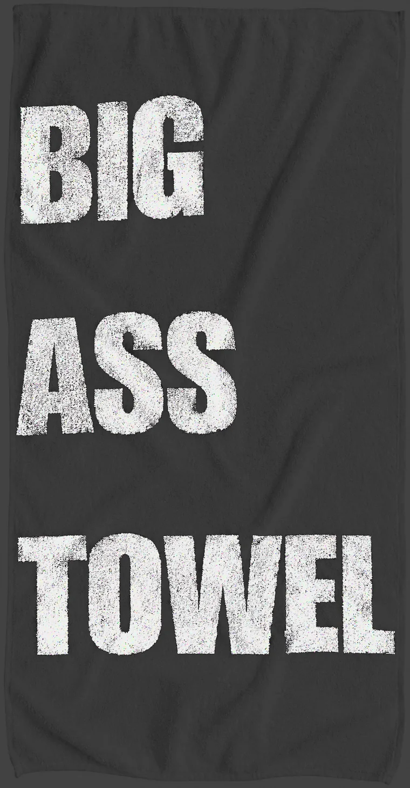

Black / 90 × 180 cm
Most "oversized" towels are regular towels with better marketing. This one is actually 90 × 180cm — nearly double the coverage of a standard bath towel — in heavyweight 600GSM combed cotton, with the BIG ASS TOWEL wordmark screen-printed across it so it survives the wash, not just the unboxing photo.
| Dimensions | 90 × 180 cm (35.4" × 70.9") |
| Weight | 600 GSM |
| Material | 100% combed cotton terry |
| Color | Jet Black or Bright White — pick via the switch above |
| Screen-printed wordmark, fade-resistant (white ink on black, black ink on white) | |
| Care | Machine wash cold, tumble dry low |
Sourced through a Turkish private-label towel manufacturer capable of custom
90 × 180cm sizing, both jet-black and bright-white reactive dye lines, and
screen/woven branding at production scale. Full sourcing research is in
SUPPLIERS.md in the project repo, including MOQ, lead time and
alternate factories for scaling or small-batch sampling.
"I'm 6'5" and every towel in my life has been a hand towel by comparison. This one actually wraps around me."
"Got the white one to match my bathroom and it's genuinely the softest towel I own. 600GSM is no joke."
"Bought the black for the gym. Genuinely huge — print hasn't faded after a month of washes."
"The light/dark toggle to pick black vs white is such a fun touch. Ordered one of each."